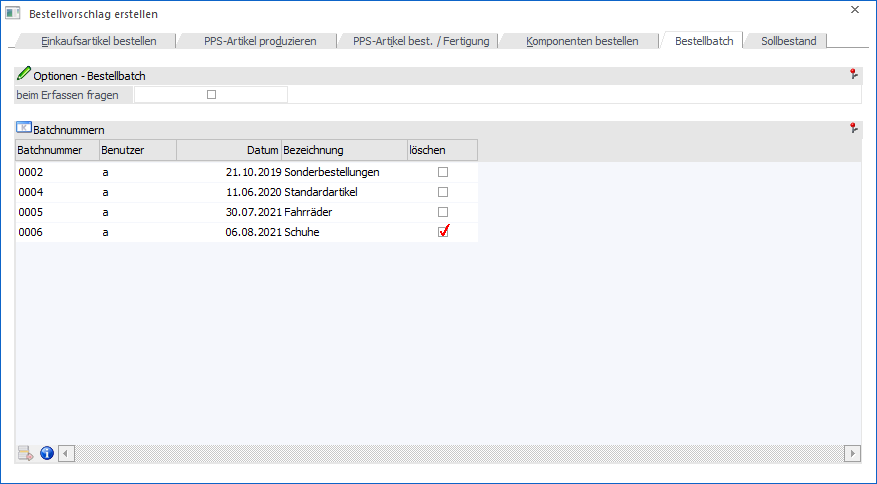
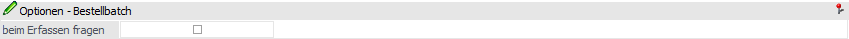
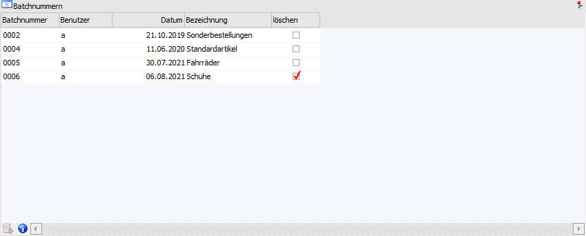
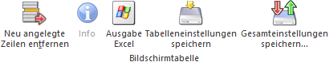
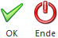

In diesem Register werden bestehende Batches mit Nummer, Benutzer und Datum angezeigt. Hier können weitere, eigene Batches erstellt bzw. bei den bestehenden Batches eine Bezeichnung vergeben werden.

Optionen - Bestellbatch

Ø Beim Erfassen fragen
Wenn diese Option aktiviert ist, so erfolgt bei der Anlage von einem neuen Bestellbatch (nach Bestätigung des Buttons "Ok") eine Abfrage, ob eine Bezeichnung eingegeben werden soll.
Hinweis 1
Ist die Option aktiviert und ein Bestellvorschlag mit einer neuen Batchnummer erstellt, so wird abgefragt, ob eine Bezeichnung für den Batch hinterlegt werden soll (es wird bei "Ja" automatisch in das Register "Bestellbatch bearbeiten" gewechselt).
Hinweis 2
Die Einstellung dieser neuen Checkbox wird benutzerspezifisch gespeichert.
Tabelle "Batchnummern"

Ø Batchnummer / Benutzer / Datum / Bezeichnung
Bei der Anlage einer neuen Batchnummer wird die Batchnummer fortlaufend hochgezählt, der Benutzername automatisch vergeben, sowie das aktuelle Tagesdatum der WinLine als Datum belegt. Die Bezeichnung kann frei vergeben werden.
Ø löschen
Wird die Option "löschen" aktiviert (Standard-Einstellung), so wird nach dem Erstellen der Lieferantenbelege der Batch gelöscht. Voraussetzung dafür ist, dass der Batch keine Artikelzeilen mehr enthält. Wenn diese Option nicht aktiviert wird, so wird der Batch beim Erstellen von Lieferantenbelegen nicht gelöscht und kann/muss über den Menüpunkt Bestellvorschlag initialisieren entfernt werden.
Tabellenbuttons

Ø Neu angelegte Zeilen entfernen
Durch Anwählen dieses Buttons können neu angelegte Zeilen wieder entfernt werden
Ø Info
Wird dieser Button angewählt so wird die Bestellbatch-Info geöffnet in der die zugehörigen Bestellvorschlagszeilen angezeigt werden.
Ø Ausgabe Excel
Durch Anwahl des Buttons "Ausgabe Excel" wird der Inhalt der Tabelle an Microsoft Excel übergeben.
Ø Tabelleneinstellungen speichern
Die Spalten einer Tabelle können grundsätzlich an beliebige Positionen verschoben, bzw. in der Breite entsprechend angepasst werden. Durch Anwahl des Buttons "Tabelleneinstellungen speichern" werden die Einstellungen benutzerspezifisch gespeichert und bei dem nächsten Aufruf des Programmpunktes wieder vorgeschlagen.
Ø Gesamteinstellungen speichern
Im Gegensatz zu "Tabelleneinstellungen speichern" können mit "Gesamteinstellungen speichern" mehrere Tabellenaufbauten gespeichert und nach Wunsch geladen werden. Zusätzlich werden Sonderfunktionen der Tabelle (z.B. "Spalte gruppieren") ebenfalls bei der Speicherung bedacht.
Buttons

Ø Ok
Mit dem Button "Ok" bzw. der Taste F5 werden die Batches gespeichert.
Ø Ende
Durch Anwahl des Buttons "Ende" bzw. der Taste ESC wird der Menüpunkt verlassen und alle nicht gespeicherten Eingaben verworfen.